Ryuo, Shiga: things to do, food and stays
Ryuo · Shiga
Ryuo
Highlighted on the Shiga map.

Stay
No bookable places to stay found in Ryuo — nearest options in Konanshi.
Dining
近江牛 岡喜本店
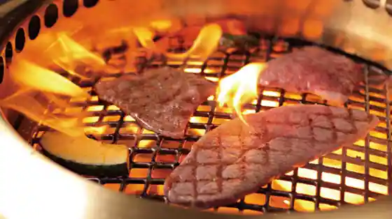
Omi Ushi Oka Ki Hon
バリバリジョニー 竜王店
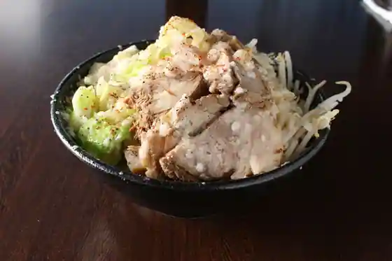
Baribarijoni Ryuo
近江牛バーガーSUDAKU
Omi Ushi Burger SUDAKU
近江牛岡喜 三井アウトレットパーク竜王店
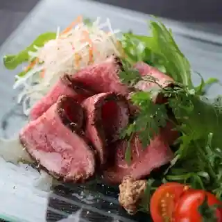
Omi Ushi Oka Ki Mitsui Autoretto Park Ryuo
里芭亭
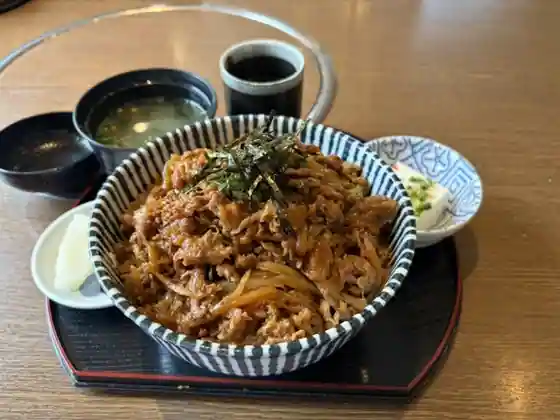
Sato Ha Tei
八代目 麺家 あくた川
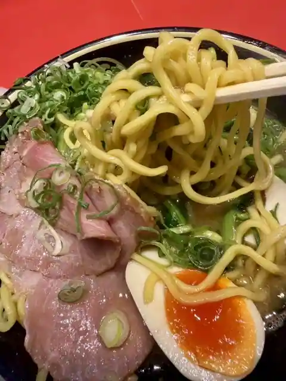
Yatsushiro Me Men Ie Akuta Kawa
親子丼 ほっこりや 三井アウトレットパーク滋賀竜王店
Oyakodon Hokkoriya Mitsui Autoretto Park Shiga Ryuo
MILK
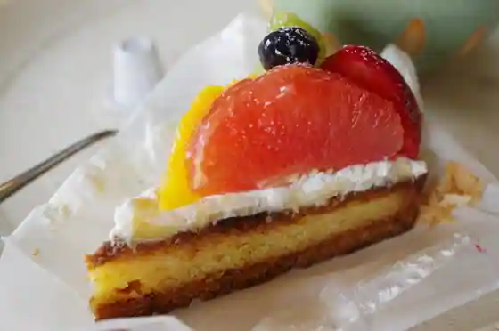
MILK
もりもり寿し 竜王店
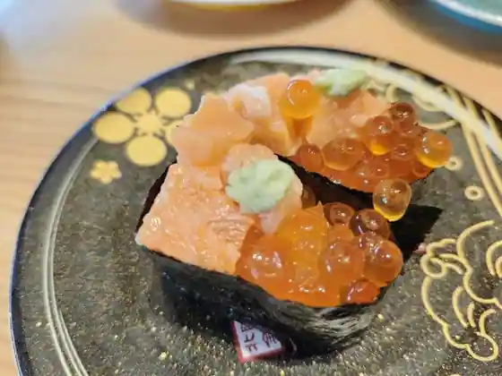
Morimori Hisashi Shi Ryuo
龍鳳園 竜王店
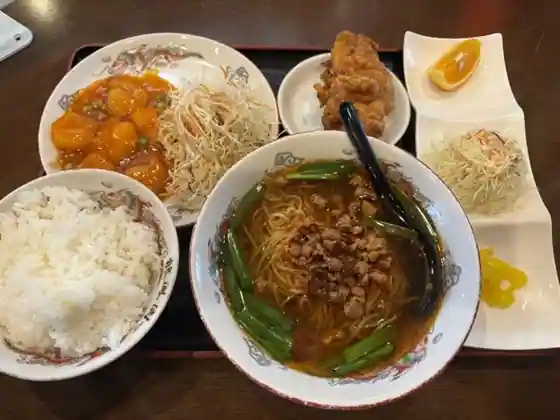
Ryuho Sono Ryuo
湖華舞 竜王アウトレット店
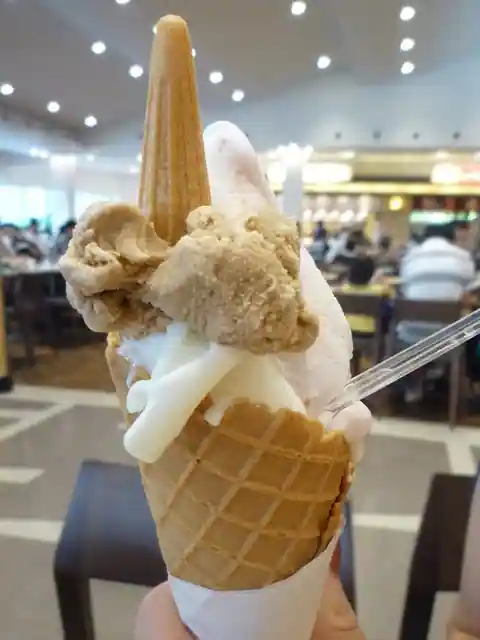
Mizumi Hanamai Ryuo Autoretto
祇園八咫 かつふく
Gion Yata Katsufuku
近江牛 岡喜 かがみの里店
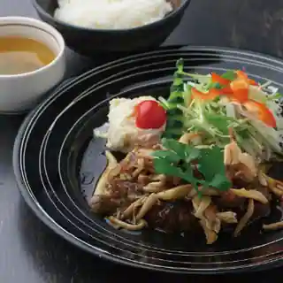
Omi Ushi Oka Ki Kagamino Sato
五郎兵衛
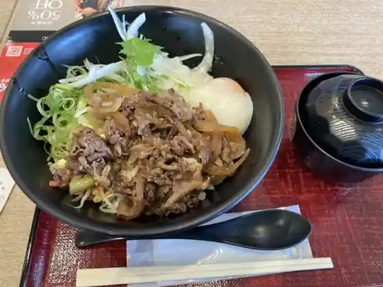
Gorobe
古株牧場 湖華舞 本店
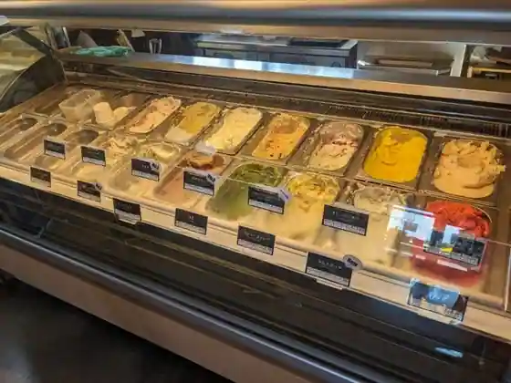
Furukabu Bokujo Mizumi Hanamai Hon
金沢海鮮丼 もり家
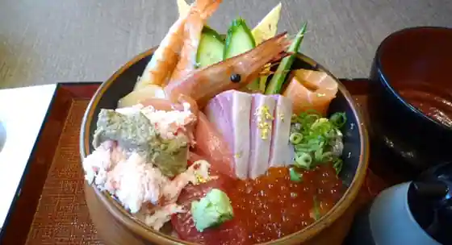
Kanazawa Kaisen Donburi Mori Ie
L'Harmonie
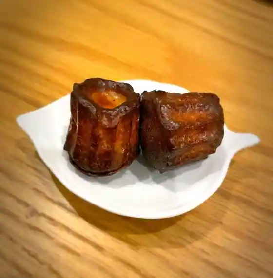
L'Harmonie
らんちょす 三井アウトレットパーク滋賀竜王店
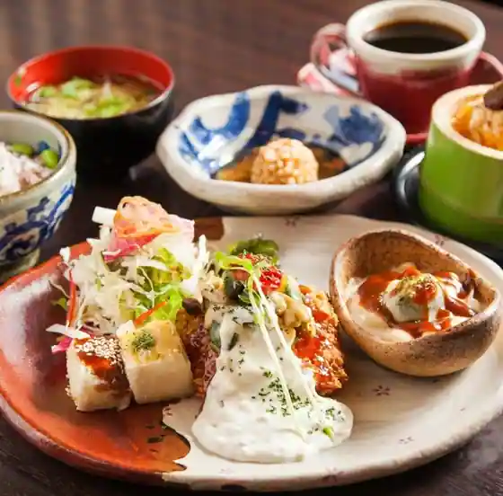
Ranchosu Mitsui Autoretto Park Shiga Ryuo
竜王かがみの里
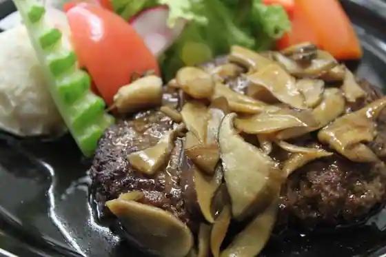
Ryuo Kagamino Sato
POPUP ラーメン アウトレットパーク滋賀竜王店
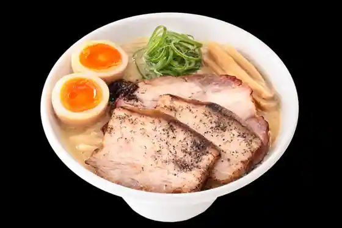
POPUP Ramen Autoretto Park Shiga Ryuo
ラーメン 桃李路
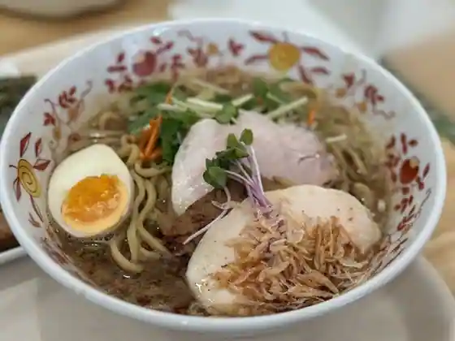
Ramen Tori Michi
ビビム 滋賀竜王店
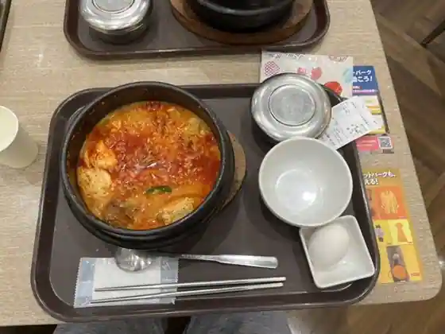
Bibimu Shiga Ryuo
さぬき庵
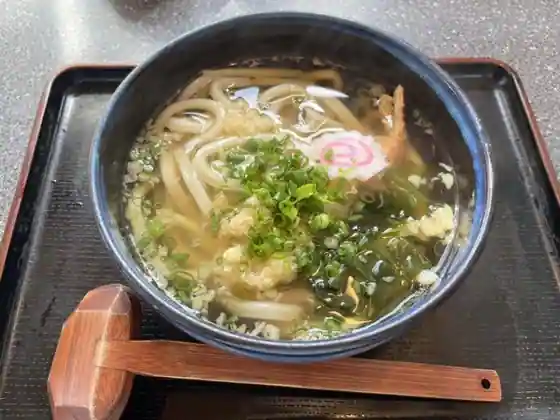
Sanuki Iori
肉問屋 五郎兵衛 本店
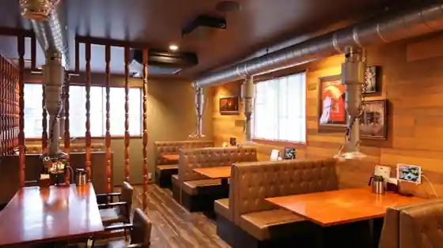
Niku Tonya Gorobe Hon
Sights
Kagami Shrine

Katte Shrine

Nae Village Shrine

Ryuo Tera

Jo Man Tera
Aguri Park Ryuo
Shigaken Kibogaoka Bunka Park
Yukino Yama Shiseki Plaza (Imose Village)
Shigaken Kibogaoka Bunka Park Yagaikatsudo Center
Roadside Station Ryuo Kagami Village
Masamitsu Tera
Hoshigasaki Castle Ruins
Yoshitsune no (Genpuku Ike)
Tennen Onsen Gamo no Baths
Ryuo Haikingukosu (Yukino Yama Kagamiyama)
Doragonhatto (Ryuo Sogo Sports Park)
Saiko Jiseki no Hokyo Into
Saiko Tera no Ishi Toro
Kumo Kan Jiseki no Ryuo Miya
Nio Mikoto
Hotate Kai Katachi Burial Mound Amemiya Burial Mound
Iwaya Burial Mound Iwaya Fudo
Omi Kuni Kusurishi Yama Shikoku Yasohachigatokoro Reijo
Mitsui Autoretto Park Shiga Ryuo
Shigaken Kibogaoka Bunka Park Seinen no Shiro
Ryuo Town Hall